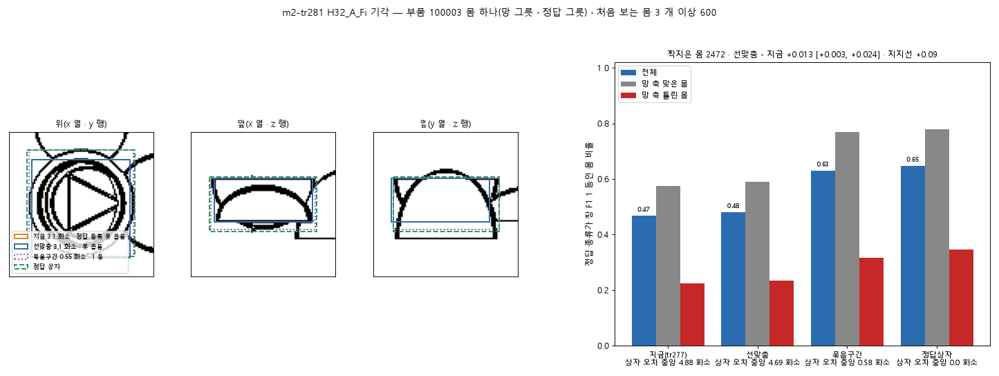

실험 m2_tr0281_h032_선상자
목표 G1.2 view 모음 → 파츠별 CAD code(CadQuery · 그 전 「3 면도 → 파츠별 CAD」 · 지금 M2 는 위 · 앞 · 옆 고정 세 장만 받음 → 아무 각도 N 장으로 바꿀 것 · 11-20) · G1 첫 제품 — 피규어 · 메카 사진 여러 장 + 치수 → 숨은선 3 면도 + 파츠별 CAD · G0 임의의 이미지 → CAD 코드 · 빌린 가정 3: 생성기기하 · 정답3D · 정사영 · 갚는 계획: 탐색 · 생성기 부품 · 몸 3 개 이상 600(tr277 · 278 · 280 과 같음) · 옛 생성기 고정(커밋 3519cfe9) · 출발 상자는 tr277 실루엣 맞춤 — 오르면 축 세 개 다 넣어 보기 · 종류마다 속 숫자 맞추기를 붙여 tr278 고치기 다시 → 진척판 2,024(f7 이 나머지 1,424 맞춤 중) → 흐린 view · m1 view 로 버팀(Sc) · 목표 시험지 값: 안 잼 (!)
망이 낸 몸 상자의 면마다 그 면을 보는 두 장(공유 축)에 선이 없으면 가장 가까운 면 선으로 옮기면(학습 없음), 다시 그림 창 점수가 정답 종류를 1 등으로 꼽는 몸이 오르나?
판정 · H32 기각(선맞춤 − 지금 +0.013 [+0.003, +0.024] · 기각선 위 < 0.03) — 망 상자에서 출발해 「면 선 없는 면만 옮김」 은 합친 입력의 다른 몸 선에 속아 상자를 거의 못 고침(오차 중앙값 4.88 → 4.69 화소) · 같은 공유 축 구간을 정답 묶음 선으로 재면 0.630(정답 상자 0.647 의 0.98) — 막힌 곳은 구간 셈이 아니라 선 주인(어느 선이 어느 몸 것인가) · 지금 오차 10 화소 넘는 몸 32 % 중 짝 탓은 23 % · 다음: 선 주인 가리기(Ce/Fi) — 망 몸마다 그 몸 선 화소를 고르는 길(정답 묶음 대비 몇 % 까지) → 구간 상자 → 다시 그림 종류(정답 묶음이면 진척 0.629)
| 가설 | 주장 | 결과 | 근거 |
|---|---|---|---|
| H32 | 면 선이 없는 면만 가장 가까운 면 선으로 옮긴 상자로 다시 그리면 정답 종류 1 등 비율이 지금보다 오른다 | 기각 | 지금 0.467 · 선맞춤 0.480 · 묶음구간 0.630(+0.163 [0.144, 0.183]) · 정답상자 0.647 · 상자 오차 중앙값(화소) 지금 4.88 · 선맞춤 4.69 · 묶음구간 0.58 · 1.5 화소 안 0.32 · 0.31 · 0.91 · 지금 오차 10 화소 넘는 몸 0.318 · 진척 자리짝종류(창 F1 1 등 종류) 망 0.532 · 지금 0.472 · 선맞춤 0.486 · 묶음구간 0.629 · 정답상자 0.636 · 선맞춤 − 망 -0.046 [-0.065, -0.025] · 다시 지은 그림 대 저장 입력 F1 중앙값 1.0 · 지금 · 정답상자 = tr280 0.467 · 0.647 · 오류 0 |
분석
한 줄로
물음: 망이 낸 몸 상자의 면마다 그 면을 보는 두 장에 선이 없으면 가장 가까운 면 선으로 옮기면, 다시 그림 점수가 정답 종류를 1 등으로 꼽는 몸이 오르나?
답: 거의 안 오른다 — 판정은 기각. 0.467 → 0.480(+0.013 [+0.003, +0.024]). 같은 구간 셈을 정답 묶음 선으로 하면 0.630 으로 정답 상자(0.647)에 거의 닿는다. 막힌 곳은 구간 셈이 아니라 어느 선이 어느 몸 것인지 가리기다.
왜 이 실험을 했나
tr280 에서 다시 그림 점수를 망친 첫 칸이 상자였다(상자만 정답으로 주면 0.467 → 0.647). 우리 데이터에는 「한 몸의 한 축 구간은 그 축을 보는 두 장에서 같다」는 구간 불변량이 있다. 그래서 망 숫자 없이 입력 선으로 상자를 고칠 수 있는지 물었다. f7 은 tr279 에서 「정답 메시로 그린 선은 그림에서 잘라 낸 선보다 깨끗해 천장이 높게 잡힌다」고 경고했다. 그 경고를 가르려고 정답 묶음 선만으로 잰 상자를 따로 뒀다. 우리 목표는 그림 → CAD 코드이고, 지금 병목은 몸 나누기다.
바꾼 것 하나
몸 상자 하나만 바꿨다. tr277 이 실루엣에 맞춘 상자에서 출발한다. 면마다 그 면을 보는 두 장에서 선이 면 폭을 얼마나 덮는지 센다. 면 자리 ±1 화소에 선이 있으면 그대로 두고, 없으면 ±10 화소 안 가장 가까운 면 선으로 옮긴다. 나머지(같은 600 부품 · 망 축 · 정형 모양 · 7 종류 창 점수)는 tr280 과 같다.
결과

| 선맞춤 − 지금 | 대조(지금) | 목표 | 넘었나 | |
|---|---|---|---|---|
| 정답 종류 1 등 비율(짝지은 몸 2,472) | +0.013 [+0.003, +0.024] | 0.467 | ≥ +0.09 · 아래 > 0 | 아니오(기각) |
「정답 종류 1 등 비율」은 몸 자리에 7 종류를 하나씩 넣어 다시 그렸을 때, 그 몸 근처에서 입력과 가장 같은 종류가 정답인 몸의 비율이다. 무작위면 0.14 다.
왜 이렇게 나왔나
확인한 것
- 선맞춤은 상자를 거의 못 고쳤다. 상자 오차 중앙값은 4.88 → 4.69 화소다. 몸 62 % 에서 상자를 옮겼지만, 나아진 건 그중 54 % 뿐이다.
- 몸이 합쳐진 입력에선 틀린 면 자리에도 다른 몸 선이나 곡면 선이 지나간다. 그래서 「면 선 있음」 검사가 속는다. 결과 그림의 그릇은 상자 밑면이 3 화소 짧다. 그런데 그 자리를 다른 곡선이 지나가 「면 선 있음」으로 보였고, 상자가 그대로 남았다.
- 같은 구간 셈을 정답 묶음 선(입력 그림에 남은 그 몸 선)으로 하면 상자 오차가 0.58 화소이고 1 등 비율은 0.630 이다. 그림에서 잰 선으로도 구간 상자는 된다 — 상자에 대해서는 f7 의 「깨끗한 선」 경고가 해당하지 않았다.
- 지금 상자는 몸 32 % 가 10 화소 넘게 틀린다(±10 화소 검색 밖). 그중 다른 정답 몸 자리에 놓인 것(짝 탓)은 23 % 뿐이고, 나머지는 어느 정답 몸과도 먼 흐린 상자다(판정 뒤 진단). 처음 내가 「짝 탓이 클 것」이라 짐작했는데, 세어 보니 작은 몫이었다.
짐작 (아직 확인 안 함)
- 선 주인을 정답의 일부만큼이라도 가릴 수 있으면 구간 상자 → 다시 그림 종류가 망 종류를 넘는다. 정답 묶음이면 자리짝종류가 0.629 로 망 0.532 보다 높다.
한계
- 600 부분집합 · 한 번만 돌림 · 고정 시험지 2,024 로는 안 쟀다.
- 처음 짠 규칙(바깥으로 선이 이어지는 끝까지)은 돌리기 전 자기 시험에서 맞던 상자를 이웃 선으로 끌고 가서 바꿨다. 「검사 뒤 고침」 한 가지만 쟀다.
- 창이 상자를 따라가므로 창 자리 몫이 같이 섞인다(tr280 과 같은 셈).
배운 것과 다음
구간 불변량은 선 주인을 알면 상자를 거의 정답만큼 되찾는다 — 묶음 없이 쓰면 이웃 선에 속는다.
- 선 주인 가리기: 망 몸마다 입력 선 화소 중 그 몸 것을 고르는 길을 찾고, 정답 묶음 대비 몇 % 까지 가는지 잰다. 구간이 답을 주는 칸은 학습하지 않고, 선 주인만 배운다.
- 그다음 구간 상자 → 다시 그림 종류를 붙여 진척판 2,024 에서 잰다(f7 이 나머지 1,424 맞춤 중).
실험 기록
- 카드(돌리기 전 커밋 c6046399 · H32_A_Fi · 식 · 판정식) · 선상자281.py(시험 · 흐름 · 재기 · 결과그림 · 짝진단) · 번호는 m2 담당 f7 세션이 잡아 줌.
- 자기 시험: 몸 혼자 선에서 정답 상자를 넣으면 안 옮김(0.0 화소) · ±5 화소 흔든 상자 2.67 → 1.6 · 망 몸(÷60) 대 정답 몸 틀 차 0.0 화소.
- 자 검사: 다시 지은 그림 = 저장 입력(F1 중앙값 1.0) · 지금 · 정답상자 팔이 tr280 의 0.467 · 0.647 과 같음 · 망 종류 그대로 자리짝종류 0.532 = tr278 바탕.
- 돌리는 중에 그림 함수(결과그림 · 흐름)를 고치다 파일이 잠깐 문법 오류였다. 새로 뜬 일꾼 일부가 시작을 못 했지만, 판은 600 부품 · 오류 0 으로 끝났다. 잼 함수(하나 · 선맞춤 · 덮음)는 커밋 c6046399 와 같다(git diff 로 확인 · 바뀐 줄은 133 행 아래 그림 함수뿐).
- 같이 잰 것: 진척 자리짝종류(창 F1 1 등 종류) 망 0.532 · 지금 0.472 · 선맞춤 0.486 · 묶음구간 0.629 · 정답상자 0.636 · 망 축 틀린 몸 760 은 정답 상자여도 0.347.
- 판정 뒤 진단: 지금 상자 오차 1.5 화소 안 794 몸은 이미 0.825(정답 상자 0.847) · 3 ~ 10 화소 641 몸 0.304 대 0.59 · 10 넘음 787 몸 0.185 대 0.45 — 상자 오차가 큰 몸은 망 종류도 덜 맞음(0.83 → 0.34).